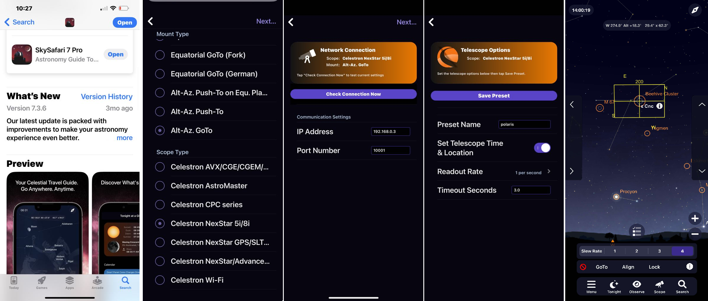

Installation Guide¶
Microsoft Win11 · Apple MacOS · Raspberry Pi · Startup · Deep-Sky Imaging · Stellarium · Sky Safari · Nina · Architecture
Software Installation¶
To Install on Windows 10/11¶
You can view a demonstration of parts of this documentation in the following YouTube Video.

The setup.bat script installs and configures the Alpaca Driver. It uses uv to install Python and the required libraries, and Git to download and update the driver. The setup script also configures the required network ports in Windows Firewall, offers to start the driver automatically when Windows starts, and places a shortcut to the driver on your desktop.
-
Logon to Windows with an administrator account
Use an administrator account so
setup.batcan offer to start the driver automatically at Windows startup (see Step 4).Before continuing, enable Windows Location permissions. The driver needs Location access to scan for and connect to the Polaris Wi-Fi network. Without it, Windows may block the Wi-Fi scan and the driver may report "No Wi-Fi interfaces found".
Open Settings > Privacy & security > Location
Enable Location services, as well as Let apps access your location, and Let desktop apps access your location. -
Open a Command Prompt
Press Windows + R, type
cmd, and press Enter. -
Download the setup script
Copy and paste the following command into the Command Prompt, then press Enter:
-
Run the setup script
You can optionally specify the version or Git branch to install. In this example,dev2_2selects the v2.2 development branch:During installation:
- You will be asked Start the Alpaca Driver automatically when Windows starts? [N/y]. Press Enter (the default) to start the driver manually from the desktop shortcut. Type y and press Enter to start it automatically; you will then need to enter your Windows password.
- If you chose automatic startup, also accept the User Account Control prompt. It is needed to set up the startup task and to open the Windows Firewall for the driver.
- Wait a few minutes while the required files and software are downloaded and installed.
When installation is complete, the driver should be up and running, and the script displays the address of the Alpaca Pilot App.
By default, the driver is installed in
C:\Users\<Username>\alpaca-benro-polarisIf the driver does not start automatically, see Troubleshooting A8.
Advanced options
You can provide additional options when running
setup.bat. For example:Option Description -d folderInstall the driver in the specified folder instead of the default location. The folder is remembered, so later runs use it again without -d.-p passwordSpecify the Windows password on the command line instead of being prompted for it. -sDo not configure the driver to start automatically at Windows startup. -yRun unattended and do not pause when the installation finishes. -vShow every detail on screen. Without it only the steps and any errors are shown, and the details are saved to %TEMP%\alpaca-setup.log.-hDisplay the built-in help. Starting the driver manually
If you skipped automatic startup by using
-sor by pressing Enter at the password prompt, you can start the driver manually in either of the following ways.-
Using the desktop shortcut
Double-click the Alpaca Benro Polaris Driver shortcut that
setup.batplaced on your desktop. -
Using a Command Prompt
Run the following command:
A console window will remain open while the driver is running.
The first time the driver runs, Windows may ask whether to allow it through the firewall. Click Allow access.
Updating the Driver¶
To update the Alpaca Driver to the latest version, repeat step 4 above.
The update process will:
- Stop the currently running driver.
- Download the latest version.
- Install any required updates.
- Restart the driver.
Your existing settings and data, including alignment and calibration data, are preserved.
Starting the Alpaca Pilot App¶
Once the Alpaca Driver is running, you can access the Alpaca Pilot App from any web browser.
-
Open a web browser
Open Chrome, Edge, Firefox, or another supported web browser.
-
Open the Alpaca Pilot App
Enter the following address in the browser's address bar:
-
Verify that the app opens
The Alpaca Pilot App should display the startup screen and switch to the dashboard shown below.

-
(Optional) Enable HTTPS
Browser features like Location and Clipboard access only work over a secure (HTTPS) connection. If you need them, follow the Pilot User Guide – Using Alpaca Pilot over HTTPS to install the driver's CA certificate and switch Alpaca Pilot to HTTPS.
Connecting to Polaris¶
Before you can use the Polaris, complete the following steps.
-
Open the Connect page
Click Connect in the top toolbar of the Alpaca Pilot window. The Connect page guides you through the steps required to connect the driver to your Benro Polaris device.
-
Set up and power on the Polaris
Set up your Benro Polaris tripod head and turn on the device.
If you cannot turn on the Polaris, see Troubleshooting B1.
-
Complete the connection procedure
On the Connect page in the Alpaca Pilot App, follow each step indicated by a checkmark.
For detailed instructions, see the Pilot User Guide – Connecting Devices.
Make sure all applicable checkmarks are green. The final Multi-Point Alignment step will remain incomplete until you have successfully aligned on three or more stars.
-
Verify the connection
After the driver has successfully connected to the Polaris, the Alpaca Pilot log — or the driver's console window if you started it manually — should contain:
The log should look similar to the following:

Troubleshooting¶
If you do not see the communications init... done message, see Troubleshooting C1 for steps to diagnose and resolve connection problems.
Next Steps¶
To plan and run an imaging session, see Deep-Sky Imaging and Planetary Imaging.
Optional Steps¶
Stellarium Desktop¶
Stellarium is a free open-source planetarium for your computer. While there are free and paid Mobile Stelarium Apps and free Web versions, I'd recommend using the desktop version as it is full-featured and has been tested with the Alpaca Driver.
Installing Stellarium¶
- Download the relevant desktop version from https://stellarium.org/en/
- The remaining instructions assume you are using v24.2 of the Windows x86 64bit version for Windows 10+
- Open the installation .exe file and click
Yeson the User Account Control dialog. - Select your language and click
OK. - Select
I accept the agreementand clickNext. - Choose your installation folder and click
Next. - Select
Start Menu Folderand clickNext. - Select
For all usersand clickNext. - Click
Install. - Check
Launch Stellariumand clickFinish.
Seting up Stellarium¶
- Press
F11to exit full-screen mode. - Press
Ato remove the Atmosphere. PressDto see Deep Sky Objects. - Press
F2to open the Configuration Dialog. - Select the
Extrastab on the Configuration Dialog menu bar. - Click
Get Catalog 5 of 9and repeat for6,7,8and9 of 9. - If you are copying Oculars settings, duplicate the following file:
C:\Users\XXXXX\AppData\Roaming\Stellarium\modules\Oculars\ocular.ini
Sky Safari Pro¶
The following screen captures show the settings you need to use for Sky Safari Pro to work with the Alpaca Driver. Choose an Mount as Alt-Az , Brand as Celestron NexStar 5i/i8 , IP Address 192.168.0.3, Port 10001, Preset Name as Polaris and Save Preset.

Installing Nina¶
Nina is an open-source free software application covering image capture, autofocus, plate-solving, centering, star detection, guiding, and a lot more. Much of this now works with the Benro Polaris (well not guiding yet). The open-source nature makes it a bit more complicated to install and setup, but it's worth the effort - and it's free.
The Astro What website has a good set of instructions for Installing Nina and its Pre-requisiites.